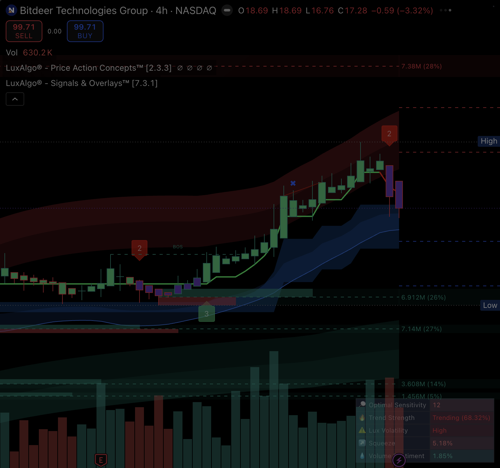

A two-way bridge to the charts you already look at. The desktop bridge drives your logged-in TradingView Desktop over Chrome DevTools Protocol — inheriting your paid plan and LuxAlgo Premium studies — so Claude can read what's on a chart and write onto it. EODHD stays the single source for scoring; TV is a visual / authoring layer only.

createShape() over CDP. Dashed horizontal lines (top→bottom) are bridge-drawn entry/stop/target
lines rendered by TradingView itself.cache/target_engine/NEM_swing.json (Project-2 structural engine)node infra/prototype/tv_bridge/push_levels.mjs NEM swing
Every primitive below ran successfully against the running TradingView Desktop app.
Active symbol, timeframe, chart type, and the full list of loaded studies — including your
LuxAlgo® Price Action Concepts + Signals & Overlays premium scripts.
state · chart_get_statePushed 4 labelled, colour-coded horizontal lines (entry/stop/T1/T2) onto a live chart and read back their entity IDs — then cleanly removed them again.
draw shape → createShape()Rendered the chart to PNG over CDP (Page.captureScreenshot) — embeddable in a dashboard
detail tab or a Slack morning briefing.
screenshotEnumerated all 5 open chart tabs, resolved each tab's true symbol, switched focus, and surgically restored a chart I'd modified (symbol + drawings) to its original state.
tab list/switch · draw clear · removeEntity()Constraint-compatible integrations. The first one already ships as push_levels.mjs.
Read any target_engine/{TICKER}_{MODE}.json and draw entry / stop / T1 / T2 with confluence
+ R-multiple labels. Eyeball whether the algo's levels line up with visible structure before committing.
Read your hand-drawn trendlines / zones via getAllShapes() and feed them into a SwingTrade
analysis — "does my drawn support agree with the structural engine's T1?"
Render analysis.py SMC order-blocks, FVGs and liquidity pools as boxes/rectangles, so the
SMC sub-tab's logic is visible on the real chart instead of just described.
draw shape -t rectangleSketch a setup idea in Pine, eyeball it over years of history with Bar Replay, and only port the
survivors into backtest.py / walk-forward. Cheap idea filtering before expensive validation.
pine set/compile/errors · replay start/stepAuto-capture annotated charts for each daily BUY and attach them to the 6:30am Slack morning briefing or the v2 dashboard QuantDetail tab.
screenshot per pick.For any closed position, drive Bar Replay through the holding window with entry/stop/targets drawn — a visual post-mortem feeding principle 20 (process > outcome).
replay + draw from portfolio_state.jsonPer CLAUDE.md: no new data licenses, EODHD single-source, respect your workspace.
TV quotes / screener / indicators must never route into the 5-pillar scoring path. EODHD is the single source of truth; two contradictory feeds is a bug, not a feature. TV = visual/authoring only.
The CLI targets the first chart tab and CDP target IDs rotate, so commands can land on a saved layout. Fix: the shipped script pins one target by symbol and never writes to a chart it didn't open.
Community tool, not affiliated with TradingView or Anthropic. It automates your logged-in app (no scraping, no new account) — subject to TradingView's Terms of Use.
git clone https://github.com/tradesdontlie/tradingview-mcp.git ~/tradingview-mcp && cd ~/tradingview-mcp && npm install~/tradingview-mcp/scripts/launch_tv_debug_mac.shnode infra/prototype/tv_bridge/push_levels.mjs NEM swingclaude mcp add tradingview -- node ~/tradingview-mcp/src/server.js then use tv_health_checkCmd+T
new-tab shortcut, so a scratch chart must be opened by hand (or an existing tab reused + auto-restored).